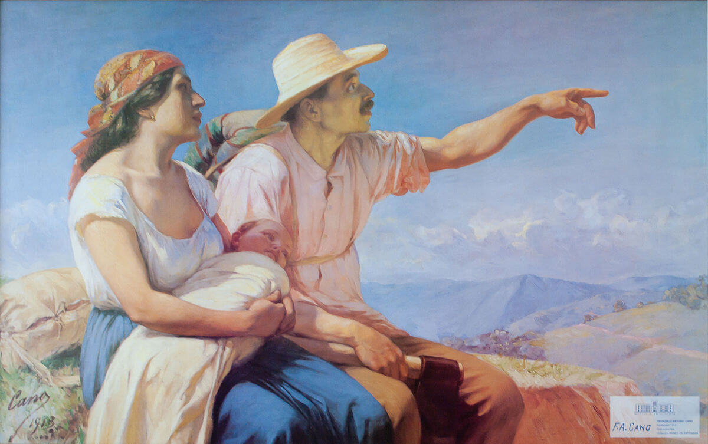
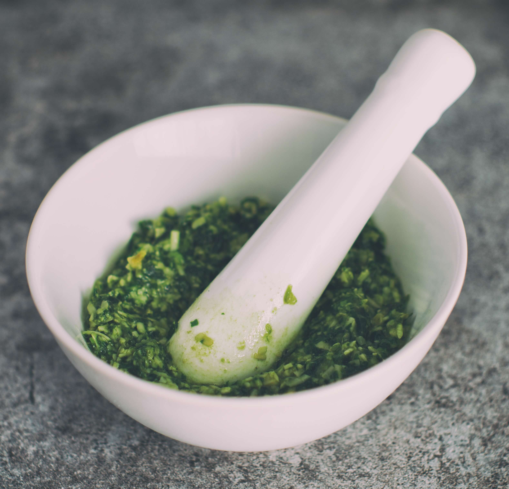

La cocina colombiana se puede definir con una palabra: diversidad. La topografía, la fauna y la flora del país hacen que hablar de un alimento o plato representativo sea imposible. La variedad de ingredientes, algunos propios y otros importados, y las múltiples formas de preparar los alimentos permitieron la creación de al menos 700 recetas autóctonas.
“En Colombia, las cocinas regionales tienen una variedad gigantesca”, explica el cocinero y antropólogo Julián Estrada. “Hay una diferencia entre La Guajira y el Pacífico, los santanderes y el Valle del Cauca”, agrega. Esto se debe a las seis regiones geográficas del país, que tienen una variedad de productos que supera incluso a las cocinas peruanas y mexicanas.
“Si uno entiende bien la cocina colombiana ve que todos esos platos cuentan una historia en particular: de las culturas que han vivido allí y de los ingredientes que abundan en esa región”, explica Alejandro Gutiérrez, el cocinero del restaurante Salvo Patria.
Como ejemplo pone al sancocho: “es el paisaje de una región metido en una olla con agua”. Por eso, afirma que el sancocho de la costa tiene pescado, ají dulce, pescado y ñame, mientras que el del Valle del Cauca tiene cerdo y plátano verde. Al interior, el sancocho bogotano (ajiaco) va con pollo, papa y cosas europeas “porque los bogotanos son gente divinamente: tienen alcaparras y crema de leche”, agrega con una pizca de humor y acento cachaco.
“Si uno entiende bien la cocina colombiana ve que todos esos platos cuentan una historia en particular: de las culturas que han vivido allí y de los ingredientes que abundan en esa región”
El Ministerio Nacional de Cultura ha intentado salvaguardar esta tradición culinaria en el Gran libro de la cocina colombiana, escrito por Carlos Ordóñez y producido en 1981 por Colcultura e Intermedio Editores. El libro hace parte de la Biblioteca Básica de Cocina, que se ha convertido en una herramienta para conocer y promover las tradicionales regionales de Colombia, su historia y el complejo sistema culinario.
Para hacer este especial, Datasketch analizó los datos detrás de este libro para comprender mejor la cocina colombiana. Así, encontramos por ejemplo que, en promedio, las recetas nacionales tienen cinco ingredientes y que los más comunes son: aceite, sal, pimienta, ajo, huevo, cebolla, tomate y cilantro. Como quién dice, el hogao es la base de nuestros platos.
Las región del país en las que hay más variedad de platos es la Costa Pacífica, donde se concentran más de 100 recetas diferentes. Estas tienen, además, el mayor número de platos con ingredientes prohibidos (como los huevos y la picha de tortuga).
Estos platillos, además de reflejar la realidad del paisaje, habla de las tradiciones culturales de una región. Esto es lo que recuerda el cocinero Iván Cadena, de Mesa Franca, cuando piensa en sus platillos favoritos: la ternera a la llanera y el sancocho.
“Yo crecí en Tame (Arauca) en las fincas de mi papá. Cuando cumplía años, mi papá me dejaba escoger la ternera que yo quisiera y empezábamos juntos el ritual para prepararla, que suele tomar un día entero”, recuerda Cadena quien celebró todos sus cumpleaños comiendo este platillo típico de los llanos y que se acompaña con yuca y papa.
“A mí colombia me sabe a sancocho cocido en olla, sobre leña, a la vera del río Tame. Esos eran los planes que hacíamos con mi familia, a los que iba incluso mi abuela, y creo que reflejan la realidad de Colombia”, añade el chef.
Más complejos que México o Perú
Para preparar las 700 recetas colombianas que Datasketch analizó, necesitas alrededor de 500 ingredientes. Esto hace de la cocina nacional una de las más complejas del mundo, como explica el antropólogo Estrada.
“La cocina mexicana y la peruana basan sus platillos en unos 15 productos, con los que hacen muchísimas recetas y por lo tanto presentan una cocina homogénea, pero la colombiana es mucho más rica y explora muchos más ingredientes”, afirma el también chef Estrada.
Algunos ejemplos de ingredientes únicos en el país son semillas y frutas exóticas como el achiote, el borojó, la cidrayota o las passifloras. Sin embargo, para la mayoría de los cocineros, las hierbas y las hojas son un elemento fundamental, que han sido ignoradas.
“Las guascas, por ejemplo, son una cosa muy chévere porque son de las pocas hierbas que no huelen a nada y no saben a nada hasta que se ponen en agua hirviendo: allí sueltan todo su aroma y sabor”, explica la cocinera Dominique Lemoine, de Doméstica.
“Las guascas no crecen en ninguna otra parte del mundo, son muy nuestras”, agrega.
Para Alejandro Gutiérrez, de Salvo Patria, las hojas de bijao, chisgua o plátano son fundamentales. “Para mí el recuerdo de un buen tamal en navidad, cuando uno abre las hojas y sale el vapor con el aroma, es una cosa que uno lleva en el corazón. Es algo hermoso y, aunque son ingredientes casi que por accidente, deberíamos rescatarlos”, explica.
“El colombiano no conoce las cocinas tradicionales, pero sí las de crianza"
Pese a esa gran variedad culinaria, el colombiano promedio conoce menos de 50 platos, lo que hace muy difícil fomentar la gastronomía nacional y asegurar su permanencia en el tiempo.
“El colombiano no conoce las cocinas tradicionales, pero sí las de crianza. Un costeño del caribe conoce su comida pero desconoce la cocina de Antioquia o del Amazonas”, explica Estrada. Para el antropólogo, esta es una de las principales razones por las que la cocina colombiana no se ha posicionado internacionalmente, como sí lo han hecho Perú o México.
A su vez, la falta de “amor por lo propio” ha hecho que se modifique la receta tradicional, o se prefiera comer “mala comida italiana que buena comida colombiana”, afirma el chef Gutiérrez.
“La gente no sabe que tenemos más de 40 tipos de arepas o 20 tipos de tamales. Pero en lugar de fomentar estos platillos, en los restaurantes sirven pan de entrada, pan con el sancocho, pan con todo. Es como si lo nuestro no tuviera estatus”, sentencia Estrada.
Por eso, para este estudioso de la gastronomía nacional, es preocupante que los platos propios se estén perdiendo. “El mecato campesino ya no se consume. Cuando usted llega a los pueblos de colombia ya no encuentra la oferta de tamales, chorizos... sólo se venden salchipapa, warps, panzerottis. ¿Dónde queda la cocina colombiana?”, cuestiona.
Tenemos más de 40 tipos de arepas o 20 tipos de tamales
Sin embargo, para otros cocineros el panorama no es tan preocupante. Desde hace unos 15 años, la cocina colombiana ha tenido un ‘boom’ y se está tratando de posicionar como comida de alto nivel que surge de nuestra tierra; ha sido un esfuerzo por rescatar lo propio.
Esto ha hecho que ya las academias de cocina o las universidades estén enseñando y profesionalizando estas tradiciones culturales y se esté incentivando en los restaurantes a invertir en la cocina nacional.
Proteger y rescatar la tradición colombiana
“Rescatar nuestra comida se trata de crear lazos entre los comensales, los productores, los cocineros, las amas de casa… para que todos andemos para el mismo lado”, explica Iván Cadena, de Mesa Franca. “Todos debemos incluir en nuestras dietas, en nuestro día a día a Colombia… creo que ya vamos por buen camino para lograr que eso se consolide”, añade.
“La gente ha tomado más conciencia de recuperar los ingredientes de nuestras recetas”, agrega Dominique Lemoine, de Doméstica. Sin embargo, para la cocinera es fundamental “regresar a lo más clásico, a las raíces tradicionales” y reaprender las bases antes de innovar con nuestras recetas.
Restaurantes como Salvo Patria, Doméstica, Mini-Mal, El Ciervo y el Oso, BistroVeg y Mesa Franca, entre otros, son ejemplo de esto. Sus cocineros, todos jóvenes e innovadores, han estudiado la cocina colombiana y se han esforzado por reflejarla en sus platos.
Para ellos, salvaguardar el saber nacional, que en gran parte ha sido transmitido por las mujeres cocineras, es una misión personal. “Debemos recuperar el amor por lo nuestro, desarrollarle cariño. Y cocinar con amor y paciencia, porque a la carrera no sale nada bien nunca”, aconseja el cocinero Juan Manuel Bautista, de BistroVeg y La María.
Antonuela Ariza, chef de Mini-Mal, lo resume perfectamente: “tenemos que aprovechar cuando cocinamos para que cada ingrediente, cada receta, sea una forma de hablar bien de Colombia”.